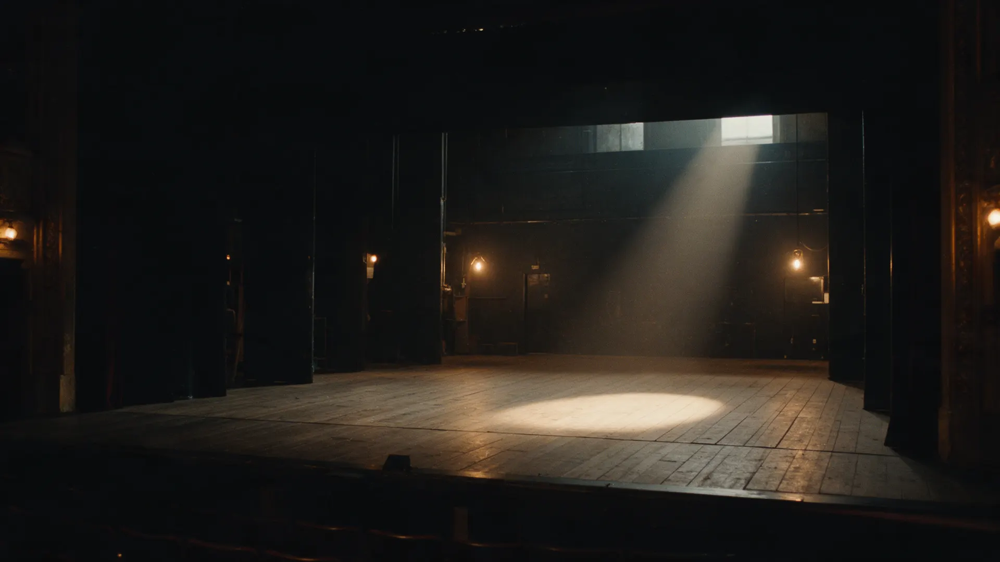
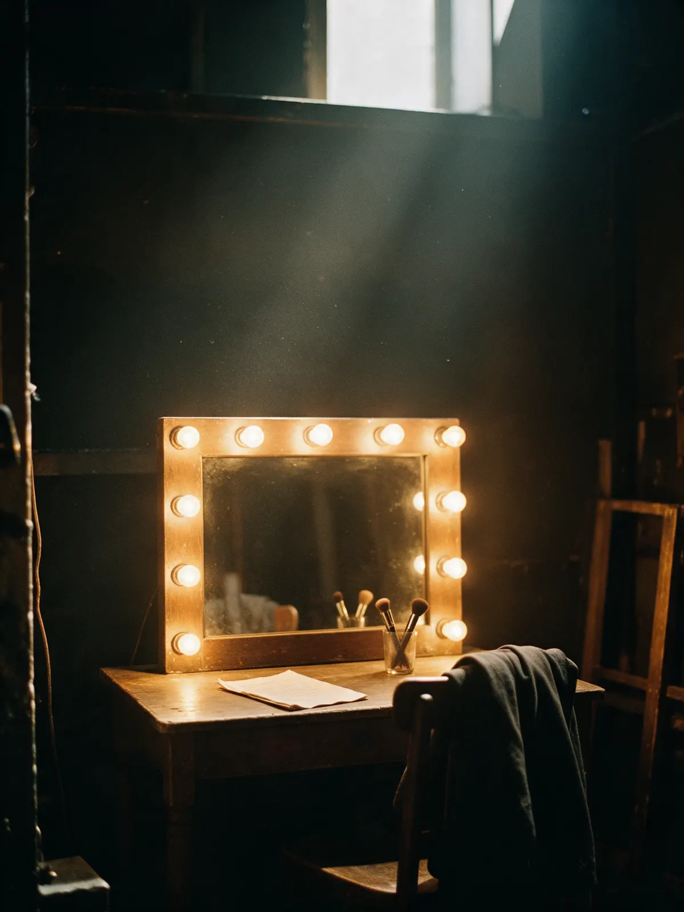
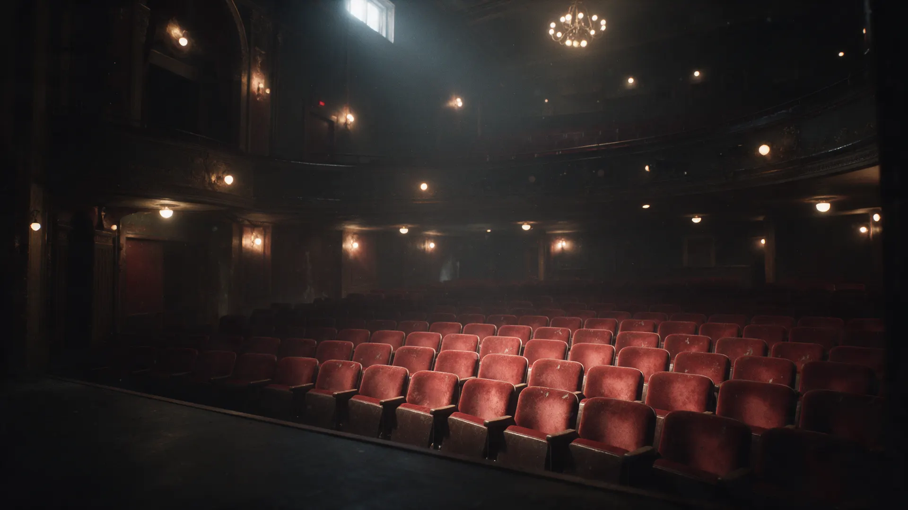

{{год 1}}
{{спектакль 1}}
{{роль 1}}

Демо для overload224 · по заказу «Сайт-визитка для актера театра»
Роли, спектакли, пробы. Для режиссёров, кастинг-директоров и зрителей.
Приглашение на пробы, в проект или на спектакль – сюда.
Спектакль, роль, театр, год. Без пересказа сюжета: посмотреть можно на видео и в афише.
{{год 1}}
{{роль 1}}
{{год 2}}
{{роль 2}}
{{год 3}}
{{роль 3}}
{{год 4}}
{{роль 4}}

Всё, что спрашивают на пробах, на одном экране: без запросов и переписки.
Ролик с работами и голосом: с него удобно начать знакомство.

Смотреть видео-визитку{{длительность}}Приглашение, вопрос по роли или билетам – всё сюда.
Написать актёру